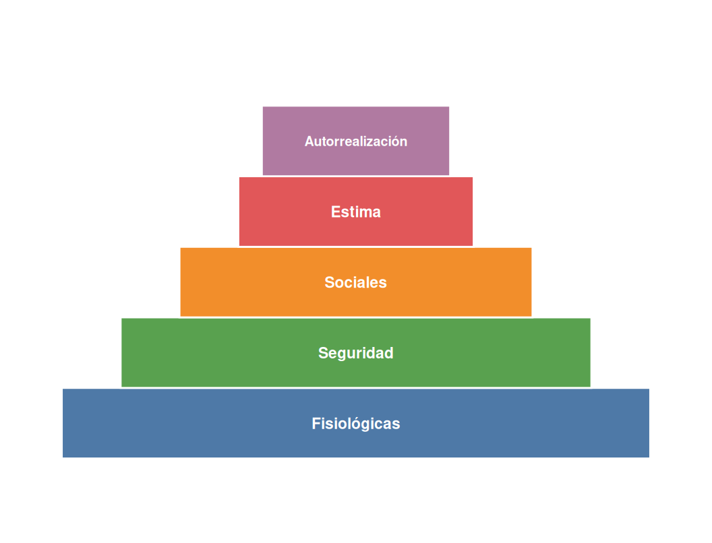
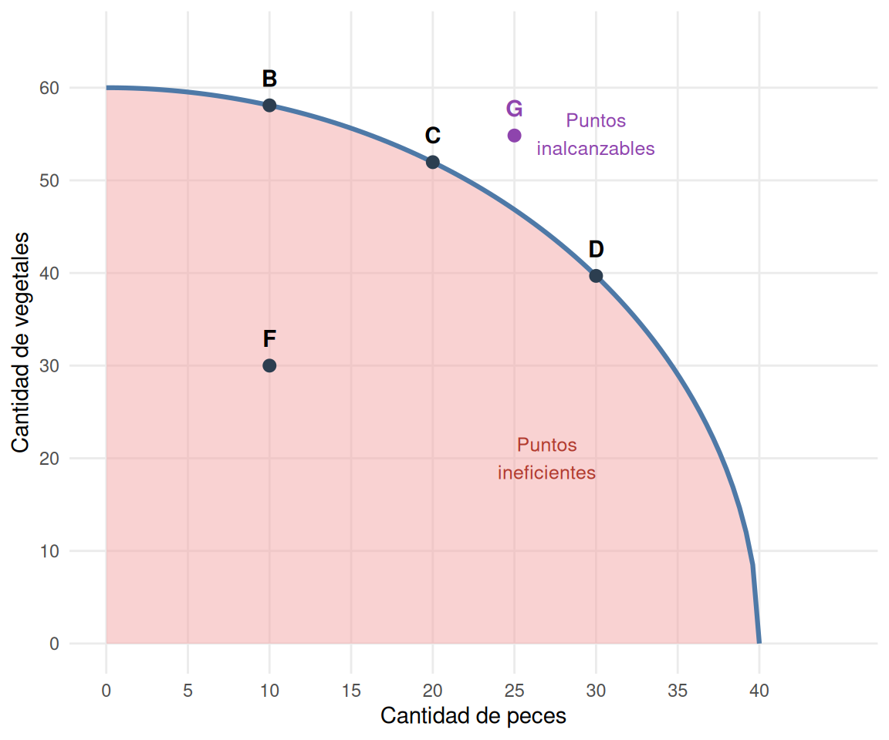
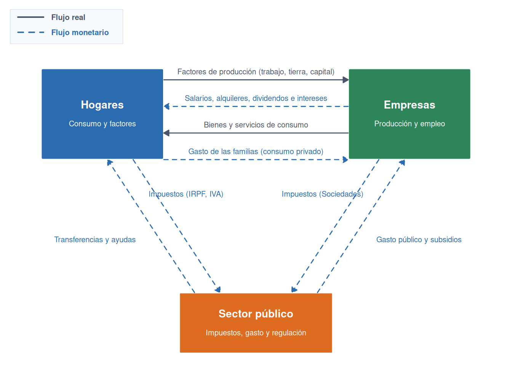

2 Necesidades, producción y sistemas económicos
2.1 Las necesidades
Toda actividad económica arranca del mismo punto de partida: alguien quiere algo que no tiene. Puede ser tan básico como comer o tan elaborado como estrenar el último modelo de móvil, pero en ambos casos hay una carencia percibida y un impulso por resolverla. A esa combinación la llamamos necesidad.
NotaDefinición
Una necesidad es la unión entre una sensación de carencia específica y el deseo de satisfacerla.
2.1.1 Clasificación de las necesidades
Las necesidades pueden clasificarse desde distintos criterios:
- Según su origen: naturales (alimentación, abrigo) o sociales (reconocimiento, pertenencia a un grupo).
- Según su urgencia: primarias (imprescindibles para la supervivencia) o secundarias (mejoran la calidad de vida pero no son vitales).
- Según su alcance: individuales o colectivas.
2.1.2 La pirámide de Maslow
El psicólogo Abraham Maslow propuso en 1943 una jerarquía de necesidades humanas organizada en cinco niveles. La idea central es que los niveles inferiores deben estar cubiertos antes de que los superiores adquieran relevancia para el individuo.
La Figura 2.1 muestra los cinco niveles, de la base (necesidades más básicas) al vértice (autorrealización):
- Fisiológicas: alimentación, agua, sueño, temperatura.
- Seguridad: estabilidad física, económica y de entorno.
- Sociales: pertenencia a grupos, amistad, afecto.
- Estima: reconocimiento, autorespeto, logro.
- Autorrealización: desarrollo del potencial propio.
2.2 Los bienes y los servicios
Los bienes son objetos tangibles que satisfacen necesidades (un libro, una silla). Los servicios son prestaciones intangibles (una consulta médica, un corte de pelo).
2.2.1 Bienes intermedios y finales, de consumo y de capital
Dos de las clasificaciones más utilizadas —ya adelantadas en la tabla siguiente— merecen una explicación algo más detenida. Según su grado de transformación, los bienes intermedios son los que las empresas compran para transformarlos o incorporarlos a otro proceso productivo, como la harina que compra una panadería o el acero que compra un fabricante de coches; los bienes finales son los que llegan ya terminados al consumidor, como el propio pan o el propio coche. Esta distinción es clave, entre otras cosas, para calcular el PIB de un país sin contar dos veces el mismo valor añadido, como se verá en el tema dedicado a la macroeconomía. Según su función, los bienes de consumo satisfacen una necesidad de forma directa e inmediata —un bocadillo, una entrada de cine—, mientras que los bienes de capital, también llamados bienes de inversión, no satisfacen necesidades por sí mismos, sino que se utilizan para producir otros bienes, como la maquinaria de una fábrica o el propio horno de la panadería.
2.2.2 Clasificación de los bienes
Los bienes pueden clasificarse desde distintos puntos de vista:
| Criterio | Tipos |
|---|---|
| Escasez | Económicos / Libres |
| Función | De consumo / De capital |
| Grado de transformación | Intermedios / Finales |
| Relación entre sí | Complementarios / Sustitutivos |
| Acceso | Públicos / Privados |
| Rivalidad en el consumo | Rivales / No rivales |
2.2.3 Rivalidad y exclusión
Una distinción especialmente relevante en economía pública es la que combina dos dimensiones: si el bien excluye a quienes no pagan, y si su consumo por una persona reduce la disponibilidad para otras (rivalidad).
| Excluibles | No excluibles | |
|---|---|---|
| Rivales | Bienes privados (ropa, alimentos, vehículo) | Recursos comunes (pesca oceánica, bosques públicos) |
| No rivales | Bienes club (Netflix, gimnasio privado) | Bienes públicos (defensa nacional, alumbrado) |
2.3 La frontera de posibilidades de producción
NotaDefinición
La frontera de posibilidades de producción (FPP) es un modelo que representa las cantidades máximas de bienes y servicios que puede producir una economía en un periodo determinado, dados los factores de producción y la tecnología de que dispone.
Este modelo se apoya en tres supuestos de partida: la economía solo produce dos tipos de bienes; cuenta con unos recursos limitados —naturales, trabajadores y capital físico— que están siendo utilizados en su totalidad; y parte de una tecnología determinada con la que combinar esos recursos.
La FPP obliga a elegir entre los dos bienes: producir más de uno implica producir menos del otro, porque los recursos que se dedican a uno se detraen del otro. Esta es la esencia del coste de oportunidad presentado en el apartado anterior, ahora aplicado al conjunto de la economía.

La Figura 2.2 distingue tres tipos de puntos. Todos los puntos situados sobre la curva (como B, C o D) son eficientes: con la tecnología y los factores disponibles, no es posible producir más de un bien sin producir menos del otro. Los puntos situados por debajo de la curva (como F) son ineficientes: representan un despilfarro de recursos, porque hay factores productivos que no se usan o se usan incorrectamente, y sería posible producir más de ambos bienes a la vez. Los puntos situados por encima de la curva (como G) son inalcanzables con los recursos y la tecnología actuales.
La curva de la FPP no es una línea recta, sino cóncava respecto al origen, y esa forma no es casual: refleja que el coste de oportunidad de producir un bien adicional crece a medida que nos desplazamos a lo largo de la curva, un fenómeno conocido como coste de oportunidad creciente. La razón es que los recursos no son perfectamente adaptables a cualquier uso. Si una economía dedicada a pescar y cultivar vegetales empieza a trasladar pescadores hacia el cultivo, los primeros en cambiar de actividad serán probablemente los que tengan más facilidad relativa para la agricultura, de modo que renunciar a unas pocas unidades de pescado permite ganar bastantes vegetales. Pero a medida que se van trasladando más y más pescadores, quedan los menos aptos para esa tarea, y cada unidad adicional de vegetales exige sacrificar cada vez más unidades de pescado. Esta misma idea —que el coste de oportunidad de un bien aumenta cuanto más se produce de él, porque los recursos se van agotando en su uso más eficiente— es la que subyace a la ley de rendimientos decrecientes que reaparecerá al estudiar la producción de las empresas.
TipEl crecimiento económico y la FPP
El crecimiento económico es el aumento de las posibilidades de producción de una sociedad a lo largo del tiempo. Gráficamente, se representa como un desplazamiento de toda la FPP hacia la derecha: combinaciones que antes eran inalcanzables —como el punto G— pasan a estar disponibles.
Existen dos vías para que una economía crezca y desplace su FPP hacia fuera.
La primera es el aumento de los factores de producción: contar con más recursos naturales (el descubrimiento de nuevos yacimientos o caladeros), más trabajadores, o más capital (mejores herramientas y maquinaria) permite producir más de ambos bienes.
La segunda es el incremento de la productividad: producir más con los mismos factores. Esto se logra mediante una mejor formación de los trabajadores —que rinden más con la misma dedicación— o mediante el progreso técnico, es decir, la mejora de la tecnología disponible. La introducción del código de barras en los supermercados, por ejemplo, permitió a los cajeros cobrar mucho más rápido sin necesidad de trabajar más horas.
2.4 Los factores de producción y los agentes económicos
Para producir cualquier bien o servicio —desde una hogaza de pan hasta una aplicación móvil— hace falta combinar recursos de distinta naturaleza. La economía clásica agrupa esos recursos en tres grandes categorías, cada una con su propia forma de retribución.
NotaDefinición
Los factores de producción son los recursos utilizados para producir bienes y servicios.
La tierra engloba los recursos naturales que la producción utiliza sin haberlos creado el ser humano: el suelo cultivable, el agua, los yacimientos minerales, la energía solar o eólica. Quien cede el uso de estos recursos —el propietario de una finca, por ejemplo— recibe a cambio un alquiler. El trabajo es la capacidad productiva de las personas, tanto el esfuerzo físico como el intelectual: desde levantar un muro hasta programar un algoritmo. Su retribución es el salario. El capital, por último, no debe confundirse con el dinero: en sentido económico es el conjunto de bienes que no se destinan al consumo directo, sino a producir otros bienes —la maquinaria de una fábrica, las herramientas de un taller, los ordenadores de una oficina—. Quien aporta ese capital recibe a cambio un interés.
| Factor | Descripción | Renta que genera |
|---|---|---|
| Tierra | Recursos naturales: suelo, agua, minerales, energía | Alquiler |
| Trabajo | Capacidad productiva humana: esfuerzo físico e intelectual | Salario |
| Capital | Bienes producidos para producir otros bienes: maquinaria, instalaciones | Interés |
NotaDefinición
La renta es el precio pagado por utilizar un factor de producción durante un período determinado.
TipUn cuarto factor, a veces añadido
Muchos manuales incorporan un cuarto factor de producción: la iniciativa emprendedora o capacidad empresarial, la aptitud para combinar los tres factores anteriores, asumir el riesgo del proyecto y organizar la producción. Su retribución específica es el beneficio empresarial: lo que queda una vez pagados el alquiler, los salarios y los intereses. No todos los planteamientos lo separan de los demás factores —a veces se considera una forma particular de trabajo—, pero conviene tenerlo presente porque explica de dónde sale la ganancia del empresario, distinta de la retribución de los otros tres factores.
Quienes combinan estos factores no actúan en el vacío, sino organizados en tres grandes agentes económicos que reaparecerán constantemente a lo largo del curso: las familias u hogares, que ofrecen los factores de producción y consumen bienes y servicios; las empresas, que combinan esos factores para producir bienes y servicios; y el sector público, que regula la actividad económica, provee determinados bienes y servicios, y redistribuye la renta entre unos y otros.
2.5 El flujo circular de la renta
El flujo circular de la renta es un modelo que describe cómo circulan el dinero, los bienes y los servicios entre los agentes de la economía.

En la Figura 2.3 se distinguen dos tipos de flujo:
- Flujo real: intercambio de factores de producción (de hogares a empresas) y de bienes y servicios (de empresas a hogares).
- Flujo monetario: movimiento de dinero en sentido contrario: salarios, alquileres e intereses (de empresas a hogares) y gasto en consumo (de hogares a empresas).
El sector público interviene recaudando impuestos de hogares y empresas, y devolviendo recursos a la economía en forma de transferencias, contratos y subsidios.
Este intercambio no ocurre en el vacío, sino a través de dos grandes mercados que iremos analizando con detalle en temas posteriores: el mercado de bienes y servicios, donde las empresas venden su producción y los hogares la compran, y el mercado de factores de producción, donde los hogares ofrecen su trabajo, su tierra y su capital, y las empresas los demandan para producir. El flujo real y el flujo monetario que muestra la Figura 2.3 circulan, precisamente, a través de estos dos mercados, en sentidos opuestos.
2.6 Los sistemas económicos
Un sistema económico es el conjunto de principios, instituciones y normas que organizan la producción, distribución y consumo en una sociedad.
2.6.1 El sistema tradicional
Es la forma más antigua de organización económica. Las decisiones sobre qué, cómo y para quién producir se resuelven siguiendo la costumbre y la tradición, transmitidas de generación en generación.
Sus rasgos principales son:
- Producción basada en la agricultura y la ganadería de subsistencia.
- Las técnicas de producción apenas cambian con el tiempo.
- La distribución de tareas suele seguir criterios familiares o comunitarios establecidos por costumbre.
Este sistema ha ido perdiendo peso frente a la economía de mercado, la planificación central y la economía mixta, aunque subsiste en algunas comunidades rurales o aisladas.
2.6.2 La economía de mercado
En la economía de mercado las decisiones sobre qué, cómo y para quién producir las toman los agentes privados a través del mecanismo de precios.
Sus rasgos principales son:
- Propiedad privada de los medios de producción.
- Libertad de elección: empresas y consumidores actúan según sus propios intereses.
- Papel limitado del Estado: se limita a garantizar el marco legal y la propiedad privada.
- Búsqueda del beneficio como incentivo que impulsa la eficiencia y la innovación.
2.6.3 La planificación central
En los sistemas de planificación central el Estado es el propietario de los medios de producción y toma todas las decisiones económicas de forma centralizada.
Sus rasgos principales son:
- Propiedad estatal de los medios de producción.
- Planificación centralizada: el Estado fija qué y cuánto producir y a qué precios.
- Objetivos sociales: igualdad, cobertura de necesidades básicas y pleno empleo.
Sus principales inconvenientes son la burocracia, la falta de incentivos y la ineficiencia en la asignación de recursos.
2.6.4 La economía mixta
La economía mixta combina elementos del mercado y de la planificación. Es el modelo predominante en las economías desarrolladas actuales.
El Estado corrige los fallos del mercado (desigualdad, contaminación, monopolios) sin suprimir la iniciativa privada.
2.6.5 Los fallos del mercado y la intervención del Estado
En una economía mixta, el Estado interviene para corregir situaciones en las que el mercado no asigna bien los recursos. Los principales son:
- Desigualdad: el mercado puede generar diferencias económicas muy amplias entre individuos. El Estado las reduce mediante impuestos progresivos, transferencias sociales y servicios públicos.
- Contaminación y externalidades: muchas actividades generan costes que no pagan quienes los causan (contaminación, ruido). El Estado puede corregirlos con regulación, impuestos ecológicos o subvenciones a tecnologías limpias.
- Crisis económicas: los mercados pueden experimentar recesiones, inflación elevada o desempleo masivo. El sector público actúa mediante política fiscal y monetaria para estabilizar la economía.
- Bienes públicos: algunos bienes son necesarios pero no rentables para el sector privado (alumbrado público, defensa nacional, carreteras rurales). El Estado los provee directamente.
2.6.6 Comparativa de los sistemas económicos
Vistos uno a uno, los cuatro sistemas pueden parecer categorías abstractas; puestos lado a lado, sus diferencias resultan mucho más claras. La tabla siguiente resume cómo responde cada sistema a las mismas preguntas: quién decide, qué incentivos existen y qué gana y qué pierde una sociedad al elegir uno u otro modelo.
| Característica | Tradicional | Economía de mercado | Planificación central | Economía mixta |
|---|---|---|---|---|
| Propiedad de los medios de producción | Comunitaria o familiar | Privada | Estatal | Mixta |
| Quién toma las decisiones | La costumbre | El mercado | El Estado | Mercado y Estado |
| Papel del Estado | Nulo o mínimo | Limitado | Total | Activo |
| Libertad económica | Muy reducida | Muy alta | Reducida | Intermedia |
| Objetivo principal | Subsistencia | Beneficio | Igualdad | Equilibrio |
| Incentivos | Muy reducidos | Elevados | Reducidos | Moderados |
| Eficiencia | Baja | Alta (en teoría) | Baja (en la práctica) | Variable |
| Redistribución | Según costumbre | Escasa | Amplia | Moderada |
| Principal ventaja | Estabilidad y cohesión social | Eficiencia e innovación | Cobertura básica garantizada | Corrección de fallos de mercado |
| Principal inconveniente | Estancamiento y escasa innovación | Desigualdad | Burocracia e ineficiencia | Riesgo de desequilibrio fiscal |
Ningún sistema gana en todas las filas de la tabla a la vez, y ahí está la clave: cada uno resuelve mejor un problema a costa de otro. La economía de mercado maximiza la eficiencia pero descuida la igualdad; la planificación central prioriza la igualdad pero sacrifica la eficiencia; la economía mixta —el modelo que domina en la práctica totalidad de los países desarrollados— trata de quedarse con lo mejor de ambos mundos, aunque sin llegar nunca a los extremos de ninguno.